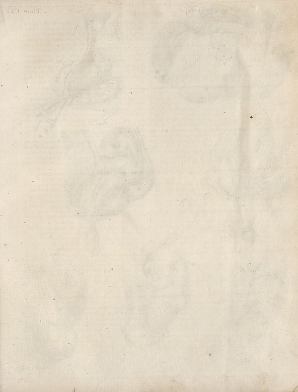

Source · scan and Parse blocks
Layers 1

Parse text by block reading order
- 0Picture
Provenance page_id, checksum, Parse model
- page_id
- britannica:309f765b1ecc83e0a7f7762e44b4a927a7555443:train:1615
- sha256
- 664ff8d7d9b21a4369b87ea0530c1d02a28e471fbf47881d5d787ac60f0826fd
- Parse
- nvidia/nemotron-3.5-parse · finish stop